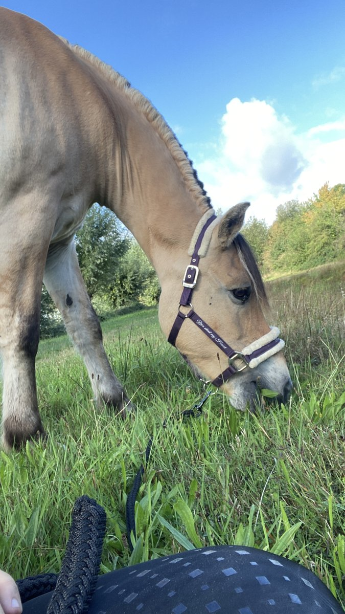
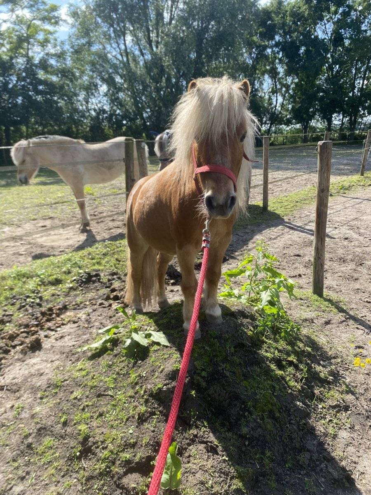
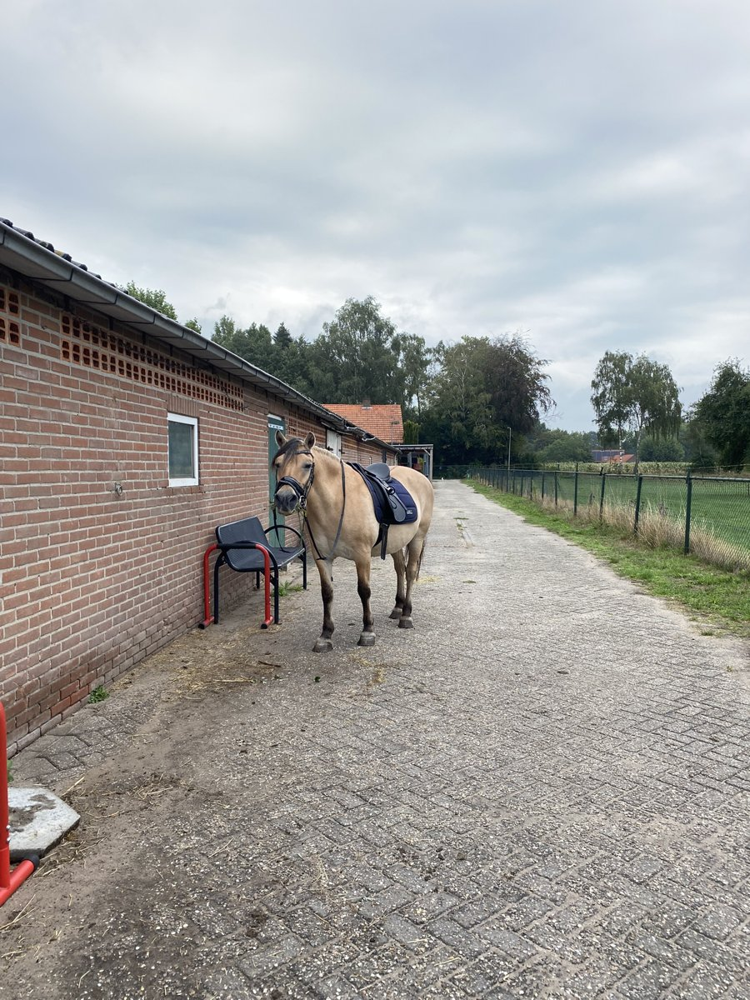

Waarom mijn droombaan?



Eerlijk gezegd weet ik nog niet precies wat ik later wil worden. Maar toen ik moest nadenken over mijn droombaan, kwam hoefsmid als eerste in me op. Dat is niet zo gek, want paarden zijn al mijn hele leven een groot deel van mijn wereld.
Opgegroeid tussen de paarden
Zolang ik me kan herinneren, ben ik in de paardenwereld te vinden. Op de stal, in de wei, in het zadel: daar voel ik me thuis. Op de foto's hierboven zie je mijn paard en mijn pony. Met hen ben ik graag bezig, en daar word ik gewoon heel blij van.
Waarom hoefsmid?
Ik hou ervan om met paarden bezig te zijn. Als hoefsmid werk je elke dag met paarden en zorg je ervoor dat ze goed op hun benen staan. Zonder gezonde hoeven kan een paard niet lopen, dus je doet echt iets belangrijks voor ze. Daarom heb ik voor dit onderwerp gekozen.